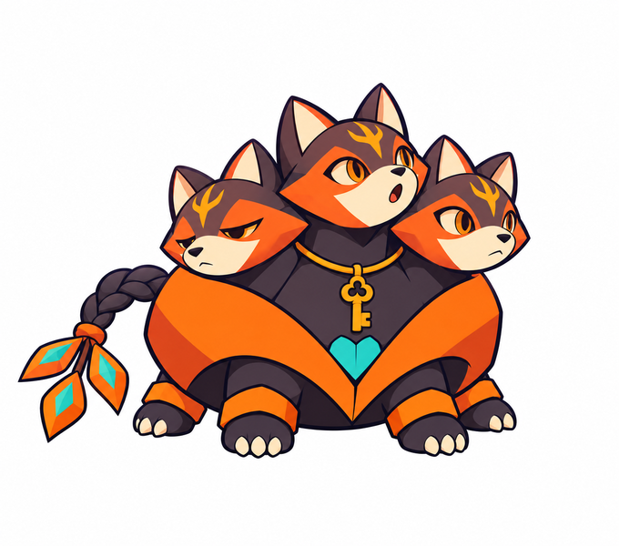
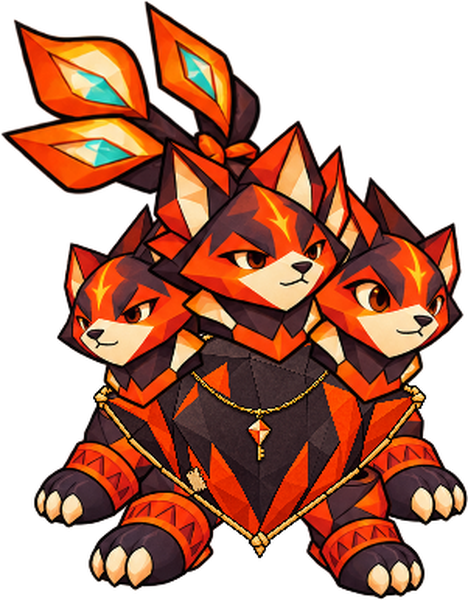
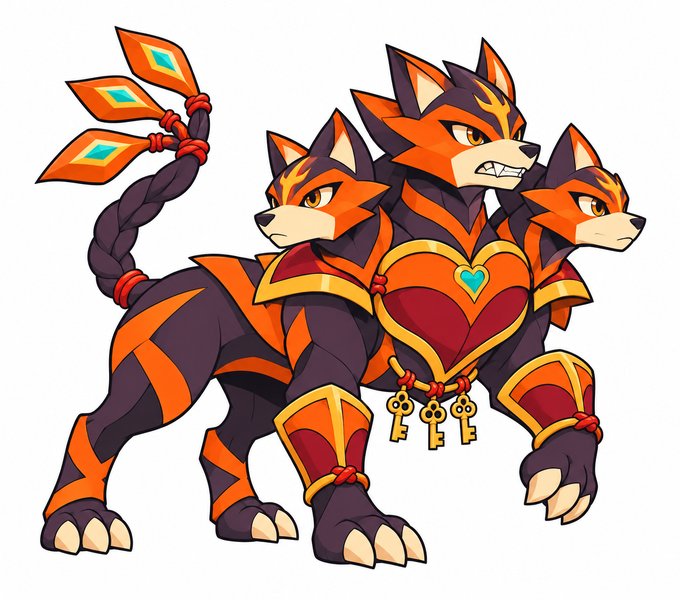
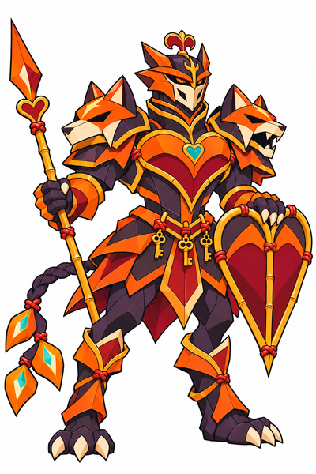

BrasecoBebê · propostaEspiar em conjuntoAprende a coordenar três focos de atenção num só indivíduo.Arte completa · Brief e origem
Trinca-brasasCriança existente · visual aprovadoExplorar e protegerCompanhia, coragem e proteção do lar constam no catálogo existente.Arte completa · Brief e origem
TrincaguardaJovem quadrúpede · propostaInterpor e vigiarA vigilância passa a ser sustentada pelo corpo e pela coordenação.Arte completa · Brief e origem
TricórdioAdulto cavaleiro · visual aprovadoGuardar e deliberarA proteção ganha intenção e instrumentos; voto de ouvir antes de julgar continua proposta.Arte completa · Brief e origem